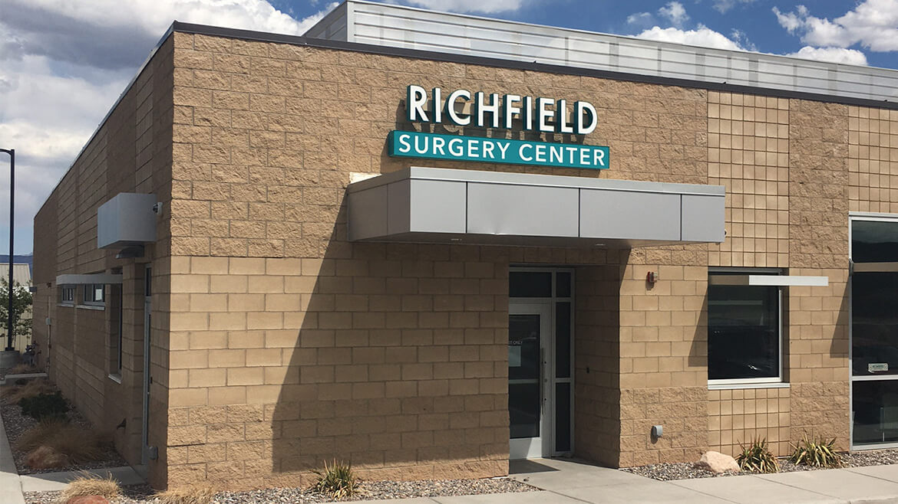

Richfield Surgery Center
Surgical services for Central Eastern Utah in a modern, accredited outpatient facility close to home.

Convenient, High-Quality Surgical Care
Richfield Surgery Center offers a state-of-the-art environment for many of Vista Healthcare's surgical needs. Located adjacent to the Southwest Spine and Pain Center Richfield clinic, the center provides residents in Sevier County and surrounding areas with access to a world-class surgical facility and treatment options often only found in larger communities.
Why Patients Choose Richfield Surgery Center
- Licensed by the State of Utah
- Fully accredited by Medicare (CMS)
- ACLS/PALS certified nursing staff
- Two fully equipped operating rooms
- Fully accredited by AAAHC
Contact
Call: (435) 216-7291
Text: 435.879.7612
Fax: 435.319.6127
Address:
555 N Main St
Richfield, UT